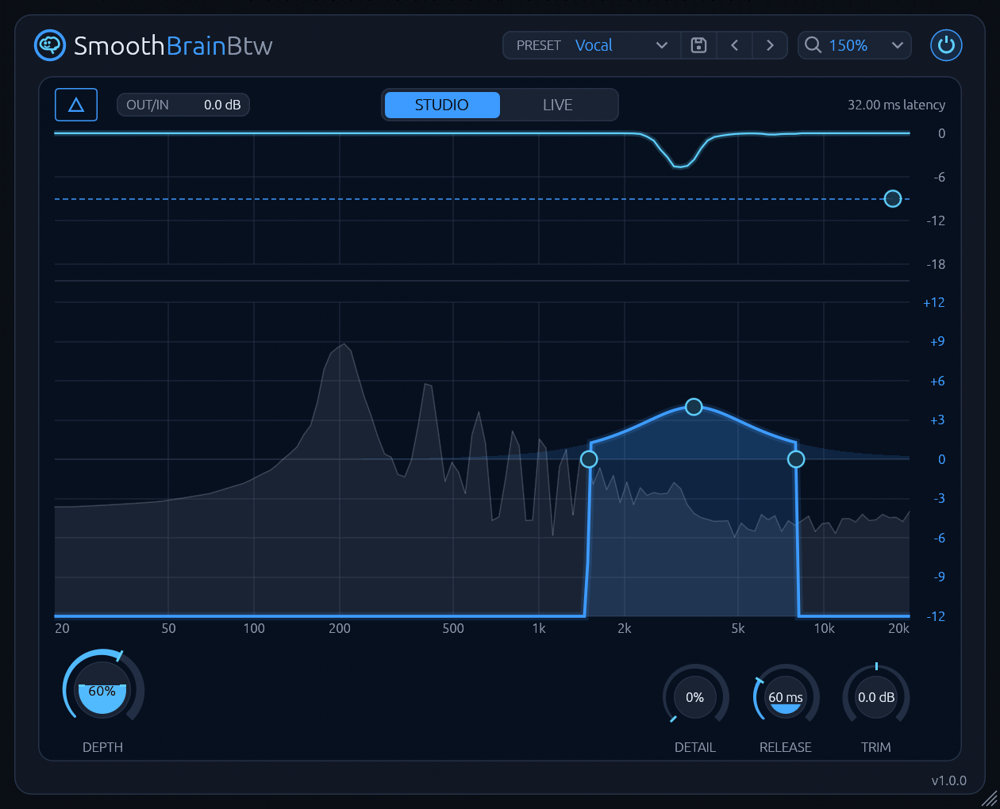
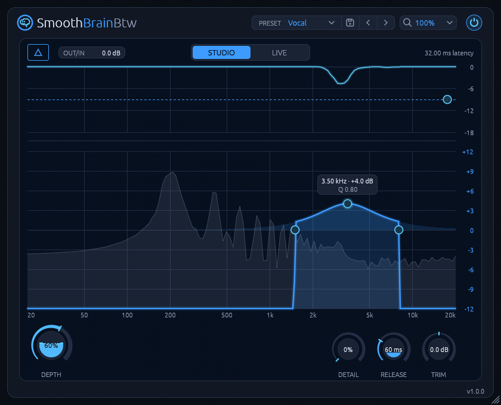

SmoothBrainBtw manual
A resonance suppressor that takes down what sticks out of a voice, a guitar, a cymbal or a synth, only where and while it sticks out. It softens harsh frequencies without dulling the sound.
Version 1.0.0. To install it, see the install steps.
Contents
Getting started
Put SmoothBrainBtw on a vocal, a guitar or the overheads and play the harshest part. At Init it already works between 200 Hz and 12 kHz: the input's spectrum lies behind the curve, and the strip over it shows the cut hanging from 0 dB. Turn DEPTH up for more. Then switch DELTA on, the Δ at the display's top left, to hear only what is taken out: turn DEPTH up until the delta starts to sound like the voice, then back off, and switch DELTA off again.

The controls
From the top left of the window.
| Control | Range | Default | What it does |
|---|---|---|---|
| PRESET | a list | Init | See Presets. |
| Zoom | 100 to 200 %, steps of 25 | 100 % | The window's scale, everything at once, kept with the project. |
| Power switch (top right) | on, off | on | Off crossfades over 20 ms to the input, delayed by the latency, so the timing stays. |
| DELTA (the Δ) | on, off | off | Plays only what is taken out. Automatable, so a bounce with it on is the delta, as heard. |
| OUT/IN | a readout | How much louder the output is than the input over the last 3 seconds; – until it has heard a second, and while DELTA plays. A click sets TRIM to take the difference off. |
|
| MODE | STUDIO, LIVE | STUDIO | STUDIO catches a new resonance as it starts, behind 32 ms of latency at 48 kHz. LIVE has no latency, and a new resonance passes for about 30 ms. Not automatable. |
| Latency (top right of the display) | a readout | The latency the host was told, in ms. | |
| MAX CUT (the dashed line in the strip) | 0 to 18 dB | 9.0 dB | The deepest any frequency is cut. Drag the line up or down; at 0 nothing is cut. |
| LOW CUT (the left wall on the curve) | 20 Hz to 2.0 kHz | 200 Hz | Below it, everything is left alone. Drag its grip along the axis. |
| HIGH CUT (the right wall on the curve) | 2.0 to 20.0 kHz | 12.0 kHz | Above it, everything is left alone. |
| Points 1 to 6 (on the curve) | 20 Hz to 20 kHz; −12 to +12 dB; Q 0.3 to 10 | off | Each a bell: where it stands, how much keener (up) or calmer (down) than DEPTH it makes the suppressor there, and how wide. |
| DEPTH | 0 to 100 % | 50 % | How far out of its surroundings a region must stand before it is cut: 6 dB at 0 %, 0 dB at 100 %. |
| DETAIL | 0 to 100 % | 0 % | Broad cuts on a whole bulge at 0 % (at least ±300 Hz wide), narrow ones on single partials at 100 %. |
| RELEASE | 20 to 500 ms | 60 ms | How fast a cut lets go. The attack is 5 ms. |
| TRIM | −6 to +6 dB | 0.0 dB | The output's level, the delta's too. A click on OUT/IN sets it. |
With the mouse: drag a knob, hold Shift for fine steps, turn the scroll wheel over it, double-click to reset it and
right-click to type a value (75 %, -1.5 dB). On the curve, double-click the ground for a point there and a point to
remove it; drag a point for where it stands and how keen it is there, and turn the scroll wheel over it for its width
(Shift finer). A double-click on a cut's grip or on MAX CUT's line resets it. Every control shows a one-line tooltip,
and every parameter but MODE can be automated.
How to use it
DEPTH and DETAIL
SmoothBrainBtw compares each part of the spectrum with the line the partials of a note trace, and cuts a region that bulges out of that line, at most MAX CUT, for as long as it bulges. DEPTH sets how far a region must stand out: at 50 %, on a sung phrase with a +8 dB resonance at 3 kHz, it takes 1.04 dB of the resonance back for 0.001 dB of the voice; at 75 % 2.02 dB for 0.14 dB. DETAIL sets how narrow: at 0 % a broad hand on a whole bulge, at 100 % only the partials that reach the line, which is gentler and takes back less.
The width of the line it compares with follows the voice's pitch, so a high voice, whose partials stand far apart, keeps its notes: the same phrase an octave up loses 0.005 dB of the voice at DEPTH 50 %.
The curve: where, and how keenly
The low and high cut are walls: past them nothing is touched. Set them around the region that bothers you, 1.5 to 8 kHz for a voice's presence, 2 to 16 kHz for cymbals.
Points make it keener or calmer where they stand. A point dragged up makes the suppressor act sooner there, a point dragged down leaves that region alone: 6 dB up over the test resonance takes 4.9 dB of it back where the defaults take 1.1, and 12 dB down there takes nothing. Hover a point to read its frequency, height and width.

Hearing what it does
- DELTA plays only what is taken out: thin whistles and edges are right, the voice itself is too much.
- Hold a point with the middle button, or Alt and the left, and only its part of the spectrum plays, or with DELTA only what is taken there. Drag it while holding to sweep for the harsh spot. Let go and the sound is as it was. A bounce never hears it.
- OUT/IN reads how much the cutting changed the level. Click it, and TRIM makes up the difference, so the power switch compares at the same loudness.

STUDIO and LIVE
STUDIO looks ahead 1536 samples (32 ms at 48 kHz), so a new resonance is caught as it starts and nothing rings ahead of a hit. The host makes up for the latency on playback. LIVE has none, for monitoring while you record, and lets the first 30 ms or so of a new resonance through. Switching fades out, waits for the new mode to fill and fades back in, and the host restarts the plugin to take the new latency: switch while stopped.
Presets
The PRESET list holds Init, your favourites, the five built-in presets and then your own. The arrows step through them,
the disk saves the current settings under a name, and PRESET reads Custom once a setting differs from every preset.
A preset holds DEPTH, DETAIL, MAX CUT, RELEASE, the low and high cut and the six points; it leaves TRIM, DELTA, MODE and
the power switch alone.
| Preset | Settings | For |
|---|---|---|
| Init | DEPTH 50 %, 200 Hz to 12 kHz | A start. |
| Vocal | DEPTH 60 %, 1.5 to 8 kHz; a point +4 dB at 3.5 kHz | The edge of a voice, keener over the presence. |
| Guitar | DEPTH 55 %, DETAIL 40 %, RELEASE 90 ms, 300 Hz to 10 kHz; a point +4 dB at 2.5 kHz | A whistling string: narrower cuts, a longer release. |
| Overheads | DEPTH 60 %, DETAIL 70 %, RELEASE 150 ms, 2 to 16 kHz; a point +4 dB at 6 kHz | A cymbal's ring down, the stick's attack kept. |
| Synth Lead | DEPTH 60 %, DETAIL 50 %, RELEASE 40 ms, from 500 Hz | A lead's resonant peaks as its filter moves. |
| Mix Bus | DEPTH 30 %, MAX CUT 4 dB, RELEASE 150 ms, to 16 kHz; a point +2 dB at 3 kHz | Gentle on a whole mix. |
Your presets are text files in ~/.local/share/SmoothBrainBtw/presets/, one id value line a parameter, shared by
every project:
depth 60
low_cut 1500
point_on_1 1
point_hz_1 3500
point_eager_1 4
A line a file doesn't have leaves its parameter alone, and a line it doesn't know is skipped.
Good to know
- Latency: STUDIO 1536 samples (32 ms at 48 kHz, 3072 samples from 88.2 kHz), LIVE none, reported to the host.
- Nothing cut is the input to the bit: with MAX CUT at 0 the output is the input, delayed by the latency.
- Cutting takes level: on 40 sung takes a median 0.36 dB at DEPTH 50 % and 0.73 dB at 75 %. Click OUT/IN to make it up with TRIM.
- It doesn't follow how hard a singer pushes: it reads how far a region stands out of the sound's own spectrum, so a loud harsh note and a soft one are cut alike.
- Compare it with a plain EQ: on a voice much of what it does is close to a still curve. Try a static bell at matched loudness before you keep it.
- Click-free changes: each frequency's cut follows with a 5 ms attack and RELEASE; DELTA and the power switch crossfade over 20 ms, TRIM glides over 20 ms, and points can be moved and automated while it plays.
- Light: 0.55 % of a CPU core at the defaults, stereo at 48 kHz, 1.2 % in LIVE, 1.1 % at 96 kHz, and 0.035 % on digital silence with the window shut.
- Stereo or mono, both sides cut alike, so a centred voice stays centred.
- A bigger window: drag its corner, or its edge in a host that offers one; only the display grows. The size is kept with the project.
Troubleshooting
- The plugin doesn't show up: check that the bundle is in
~/.clapor/usr/lib/clap, then rescan plugins in your DAW. It needs a CPU with AVX2. - The editor window stays black or doesn't open: check that a Vulkan driver is installed. The
vulkaninfotool fromvulkan-toolsshould list your GPU. - The track is 32 ms late: that is STUDIO's latency. The host makes up for it on playback; while recording, switch to LIVE.
- A short gap when switching MODE: the output fades out, waits while the new mode fills and fades back in. Switch it while stopped.
- The output is thin and whistly: DELTA is on.
- The voice sounds dull: DEPTH is too high, or the band reaches too far down. Turn DELTA on: if it sounds like the voice, back DEPTH off; raise the low cut, or put a calm point (dragged down) over the body.
- It does little to a boomy bass: a frequency bin there is wider than a bass resonance. Use a dynamic EQ bell.
- The track got quieter: click OUT/IN, which sets TRIM to match.
- Typing a preset's name does nothing: some hosts keep keystrokes for themselves. Write the preset file by hand instead (see Presets).
- A preset doesn't show up in the menu: its file must end in
.preset, and its name can't start with a dot or be Init's or a built-in preset's. Reopen the editor after adding files by hand.